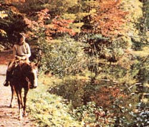
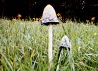
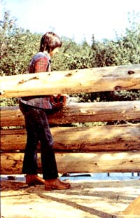
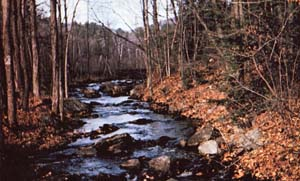

Occasionally, a neighbor or an acquaintance of mine will ask me,"What brought you way up here to the north country?'... a query that always leaves me speechless, since there's so much to say. Sometimes-in my tumbling to find an answer-I'll reply, "I come here to farm In the mountains," to which the usual response is a stunned silence that suggests "Are you crazy?" Other times, I carry on about how I love the mountains ... but this is too trite-sounding to repeat very often.
And when I'm asked, more specifically, why I chose to come to the Adirondocks -which most people think of as too inhospitable a place for homesteading-I stop, survey the majestic peaks around me, and find myself overwhelmed by a desire to reply, "Don't you know?"
It's true that Now York's huge Adirondack Park (the largest state park In the U.S.) Is characterized by dramatic weather patterns, nearly sub-arctic winters, a 90-day growing season, and exhomely rocky soil (none of which can be considered conducive to home-steading). But the park is also endowed with frequent rainfalls, the purest of spring-fed streams and lakes, beautiful forests, and brilliant displays of northern lights, And a recently established state land-use program (inspired by environmentalists) promises to keep the park unspoiled by civilization for years to come.
The area's short growing season is probably the biggest deterrent to homesteaders. (With the exception of such cold-loving crops as peas, lettuce, radishes, onions, and potatoes which can go in the ground in mid May-the earliest you can safely plant anything outdoors up here is around June 1.) Nonetheless, I plant continuously-and in accordance with favorable moon phases-from May 31 to June 12 ... and by the end of June my garden Is crowded with vegetables and herbs of every description, even sweet potatoes! (People told me they'd never grow, but the yams flourished.) By late September, I store away enough homegrown edibles to keep me in "eats" clear through to the following spring.
It's not easy to garden "organically' in these mountains. The abundant rainfall and pleasant temperatures that foster plant growth during the summer also encourage the growth of all kinds of insects: cutworms, aphids, you name i t (Thus, unless you want to use chemicals you have no choice but to plant only the very hardiest of crops ... which simply means whatever survived best the preceding year.) Fortunately, my prowling cats keep wildlife-related plant losses to a minimum.
Few gardeners here use a mulch. but I find one essential. Sawdust and bark cost next to nothing, are readily available, and-when used with hay left over from the mow-make a worthwhile addition to the vegetable patch. The sawdust/bark/hay mulch does decompose slowly-and must be supplemented with manure (from our horses and goats), lime, and stove ashes to keep the soil chemistry in balance-but it does greatly retard wood growth and makes the garden much more attractive.
As a vegetarian and forager, I'm always on the lookout for wild edibles... and around here, I have little trouble finding them. Thyme, mullein, watercress, mint, and other goodies grow abundantly in the woods, streams, and meadows. And at summer's end countless varieties of berries spring forth ... each one sweet, juicy, and-of course-free for the picking.
With the cool, moist onset of autumn come the mushrooms ... and what delicacies these are! From September through early November 1 Include them almost daily in my meals. (So far, 'I've eaten over two dozen varieties ... though, of course, I don't recommend that anyone eat ANY mushroom that hasn't first been positively identified.) It's also at about this time that the wild apple trees begin to bear their luscious, sweet/tart fruit. (How I look forward to those October apple ples!)
My biggest and most recent challenge has not been growing and/or foraging enough food to live on, but building our log cabin (which-as of this writing-is nearly complete).
We were fortunate to have been able to purchase cedar logs for the lodge. (They're scarce in these parts, since cedar is a favorite food of deer.) I could've used some of the many mature spruce and balsam trees that grow on my 30-acre homestead, but I just couldn't lot myself cut any of them down ... and anyway, I had my heart set on cedar. Thus, I didn't mind paying $500 to have fifty huge (8" to 12" in diameter) cedar logs hauled in from twenty miles away. (Nor did I mind peeling the big timbers by hand, since-to my surprise-long pieces of skin and bark stripped away effortlessly!)
Though the news of two women building a cabin In the woods raised a few eyebrows at first, my roommate and I have received nothing but generosity and cooperation from our neighbors. Cabin-building sessions became friendship-building sessions last summer as we and a bevy of friends/ neighbors worked together on our hand-hewn, all-wood dwelling.
Since I live with only one other person, my homestead must-and doesfunction an a relatively simple basis. We grow and forage our fruits and vegetables. Eight laying hens round out our protein, and we either sell or barter the excess eggs. Two goatseach hall Alpine, halt Nubian-provide enough milk for our needs. (Like the hens, our goats are allowed free range ... which keeps them healthy, happy, and productive.)
We also have a pair of horses, which we often take on pleasurable rides over mountain dirt roads. Soon-since they're both young and well-bred-I'll attempt to train them (and myself) for skidding, plowing, and other draft duties.
A self-reliant lifestyle certainly is not the easiest existence to pursue ... but the rewards are well worth the effort. To me, the unrelenting routine of feeding hungry chickens every morning and night is little tall to have to exchange for a nestful of eggs. Likewise, having to plan around our goats' strict twicedaily milking schedule is a small sacrifice when I consider the animals' contribution to our well-being. And the paltry amount of work required to keep a garden Is more than compensated by the bounty of delicious, sweet vegetables we harvest every summer. (If these things are what's meant by the old phrase "living by the sweat of your brow" all I can say Is: "Fine! It makes a lot of sense!")
My advice to would-be homesteaders is, don't rule out the possibility of settling in a rugged, mountainous, sparsely populated area such as the Adirondacks. The winters may be cold, the growing season short, and steady jobs virtually non-existent (the two of us rely on freelance art and writing, piano-teaching, and part-time nursing for income) ... but It is possible-given boundless reserves of energy and determination-to make a go of it in such a seemingly inhospitable place. Believe me ... I know!
|
|
 |
 |
|
 |
 |
|